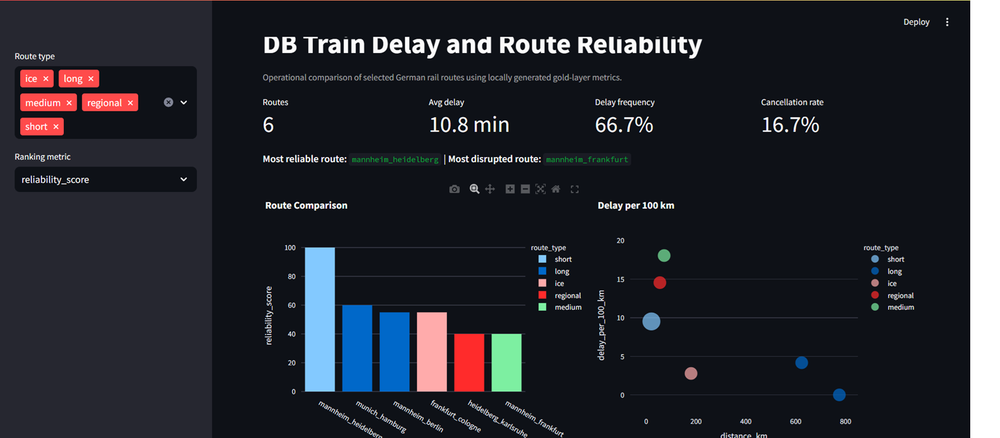

Data Pipelines
REST API ingestion, ETL/ELT workflows, Azure data layers and reliable reporting datasets.
Data Engineer and Analytics Engineer with strong BI reporting experience
Data Engineer and Analytics Engineer with 5 years of experience building reliable data pipelines, reporting layers and BI dashboards across healthcare IT and financial services. I work with Python, SQL, Azure, dbt, Databricks, PySpark, Power BI and DAX to turn operational data into clean datasets, KPIs and business-ready insights.
// STATUS
Mannheim, Germany. Open to Data Engineering, Analytics Engineering and BI reporting roles.
// WHAT I BUILD
REST API ingestion, ETL/ELT workflows, Azure data layers and reliable reporting datasets.
dbt models, reporting marts, data quality checks, KPI logic and validated business-ready datasets.
Power BI, DAX, Power Query, SQL analysis and stakeholder-facing KPI dashboards.
// EXPERIENCE
Healthcare IT Analytics
Universitätsklinikum Heidelberg | 12/2025 - 05/2026
Financial Services Reporting
Hexaware Technologies Pvt Ltd. | 03/2019 - 10/2023
// PROJECTS

Data Engineering / Analytics Engineering
Built German rail route reliability metrics with API ingestion, bronze/silver/gold layers, dbt models and a Streamlit dashboard.
Data Engineering / Analytics Engineering
Built forecasting-ready datasets for electricity, solar, weather and cost data to support energy optimization decisions.

BI Analyst / Healthcare Data Analyst
Built Power BI views for 5,110 patient records across age, BMI, glucose, hypertension and smoking status.
Data Analyst / BI Analyst
Created dashboard views for actual vs predicted load, renewable contribution, forecast error and model performance.
// CORE SKILLS